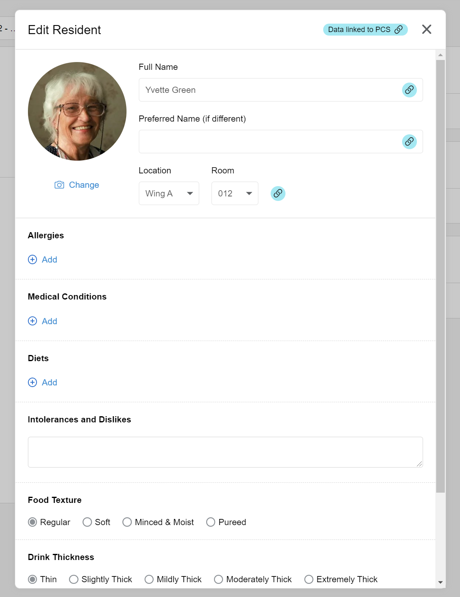
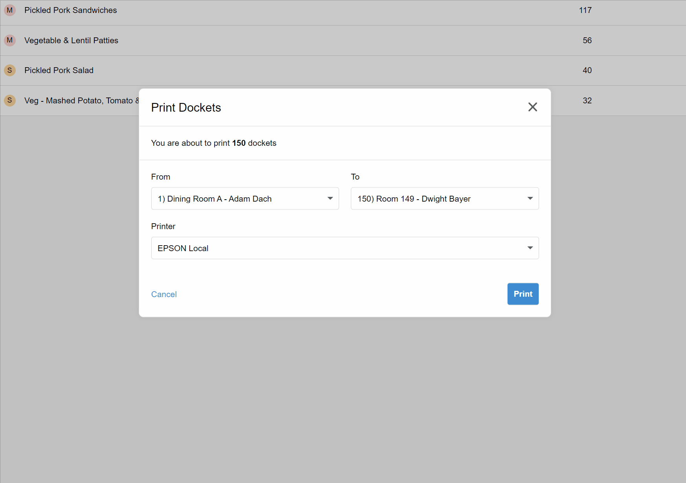

Release 2021.6 – PCS integration and printing docket subsets
This release introduces our integration with Person Centred Software, one of the leading clinical systems for aged care, and adds finer control over which dockets get printed.
Person Centred Software (PCS) Integration
One of our most requested features has been the ability to integrate with PCS, a leading clinical systems for aged care. Well, it's now here! Once you have set up the integration, resident names and rooms will automatically be synchronised from PCS, they'll be marked as away when their file is suspended in PCS, and automatically archived once their file is closed. The synchronisation occurs every 15 minutes. To set up integration PCS, please work with your Embrayse support contact. Note that any resident fields that are linked to PCS will no longer be editable in Embrayse. These fields will be "locked" as shown below:

Print a subset of dockets
You can already filter the prep report before printing dockets. But now you can go even further and select the specific range of dockets you want to print. Simply select the From and To fields on the print dialog box. This is especially useful if you want to print a single docket, or if you have to resume a print job after needing to replace the printer paper roll.

Other Improvements and Bug Fixes
- On the room selector on resident order page, you can now see the wing name as well as the room number.
- Fixed: sometimes dockets don't print correctly when printing many in one go (due to a timeout).
- Fixed: keyboard focus is sometimes lost when editing residents or dishes.
- Fixed: the notification dropdown sometimes does not show when there are many notifications.
- Updated the website icon that appears on the browser tab bar.
Want to see Embrayse in action?